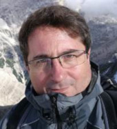
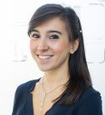
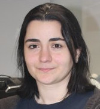
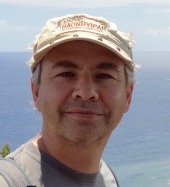
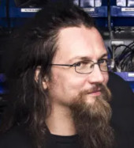
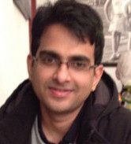
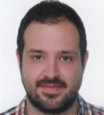
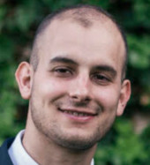
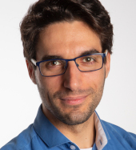

The 2020 CORSMAL Challenge
Multi-modal fusion and learning for robotics
Organised in conjunction with the IEEE International Conference on Multimedia and Expo 2020, London, UK
Programme (8 July, starts at 10am BST)
|  | 10:00 am BST Welcome and introduction: the CORSMAL project Andrea Cavallaro Queen Mary University of London (QMUL) & Alan Turing Institute Slides | Video |
|  | 10:10 am BST Unknown object grasping: techniques and benchmarks for challenging robotic platforms Giulia Vezzani Istituto Italiano di Tecnologia (IIT) & DeepMind Slides | Video |
|  | 10:25 am BST Object shape estimation and modeling combining visual data and tactile exploration Yasemin Bekiroğlu University College of London (UCL) & Chalmers Slides | Video |
|  | 10:40 am BST Automatic 3D annotations applied to 3D hand+object pose estimation Vincent Lepetit École des Ponts ParisTech Slides | Video |
|  | 10:55 am BST Touch, interaction, and presence in telerobotics - some challenges from the field Rich Walker Shadow Robot Company Slides | Video |
| 11:10 am BST Q&A with the speakers and discussion |
|
|  | 12:00 BST Learning robotic interaction tasks with stability guarantees Shahbaz Abdul Khader KTH Royal Institute of Technology (KTH) Slides | Video |
|  | 12:10 pm BST CORSMAL dataset: Containers Manipulation Apostolos Modas École Polytechnique Fédérale de Lausanne (EPFL) Slides | Video |
|  | 12:20 pm BST CORSMAL demo: localisation and shape estimation of containers Alessio Xompero Queen Mary University of London (QMUL) Slides | Video |
|  | 12:30 pm BST CORSMAL Benchmark for human-robot handover Ricardo Sanchez-Matilla Queen Mary University of London (QMUL) Slides | Video |
| 12:40 pm BST Q&A with the speakers and discussion |
Organisers
Apostolos Modas, École polytechnique fédérale de Lausanne (Switzerland)
Pascal Frossard, École polytechnique fédérale de Lausanne (Switzerland)
Andrea Cavallaro, Queen Mary University of London (UK)
Ricardo Sanchez-Matilla, Queen Mary University of London (UK)
Alessio Xompero, Queen Mary University of London (UK)
Logistics
Riccardo Mazzon, Queen Mary University of London (UK)
Sponsor of the ICME 2020 CORSMAL Challenge
Sponsors


Partners